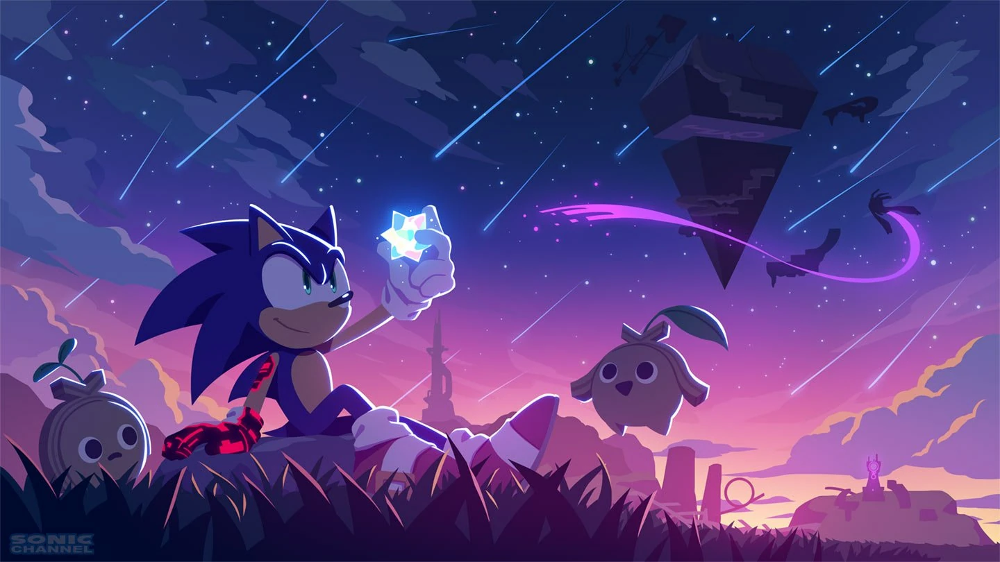

Welcome! Thanks for stopping by my personal website. I developed this website with the goal of you getting to know me and to outline my Computer Science education and training. To get started, let me explain what each tab above will show you.
Home - This is the tab your currently on (crazy I know 😅). This tab deals with helping you get started with navigating the site.
About - This tab talks a little bit about my life and who I am as a person.
Programming Languages - This tab goes into what Programming Languages I have used a lot ( and a little) of through my Computer Science Career. This tab also details specific projects used with the languages.
Technology & Tools - This tab explains Applications and Technologys I've used so far in my Computer Science Career.
Links - This tab details links to Projects, Pictures and Personal Profiles of yours truley!

Sonic the Hedgehog, Surviving on the Starfall Islands
Art By: Sonic Channel.